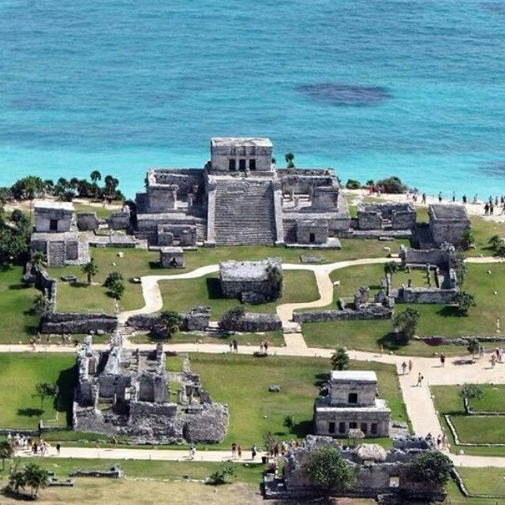
Ruinas mayas frente al mar Caribe, únicas en el mundo. Ofrecen vistas espectaculares y gran valor histórico.
Se recomienda visitarlas temprano para evitar el calor y disfrutar de la tranquilidad del lugar.
Tulum es uno de los destinos más visitados del Caribe mexicano gracias a su combinación de historia, naturaleza y sostenibilidad.
Cuenta con playas de arena blanca, aguas turquesa y un ambiente relajado ideal para descansar o explorar.
Además, es famoso por su enfoque ecológico, con hoteles sostenibles y experiencias en contacto con la naturaleza.
Es perfecto tanto para turistas aventureros como para quienes buscan tranquilidad y conexión con el entorno.
Entre sus atractivos destacan los cenotes, reservas naturales y la posibilidad de practicar deportes acuáticos como snorkel y buceo.
La vida nocturna también ofrece bares y restaurantes frente al mar, con un ambiente bohemio y relajado.
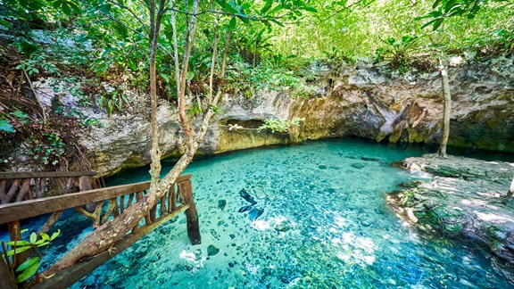

Ruinas mayas frente al mar Caribe, únicas en el mundo. Ofrecen vistas espectaculares y gran valor histórico.
Se recomienda visitarlas temprano para evitar el calor y disfrutar de la tranquilidad del lugar.
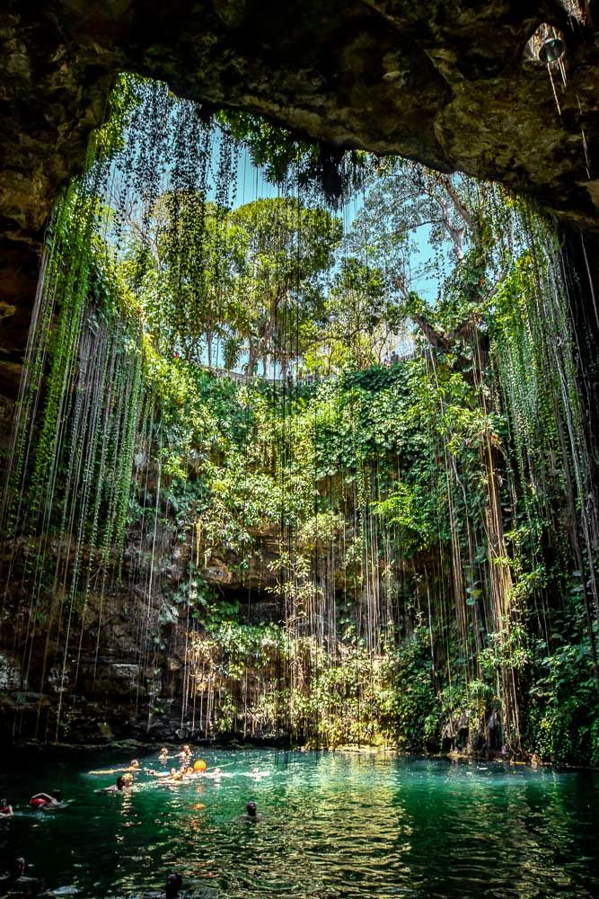
Pozos naturales de agua dulce donde puedes nadar y explorar cavernas subterráneas.
Algunos cenotes ofrecen actividades como buceo y recorridos guiados.
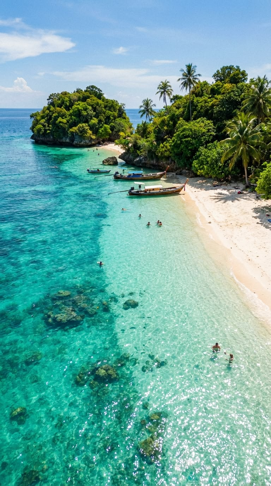
Playas tranquilas con arena blanca y aguas cristalinas, ideales para relajarse.
Muchas cuentan con clubes de playa y restaurantes frente al mar.
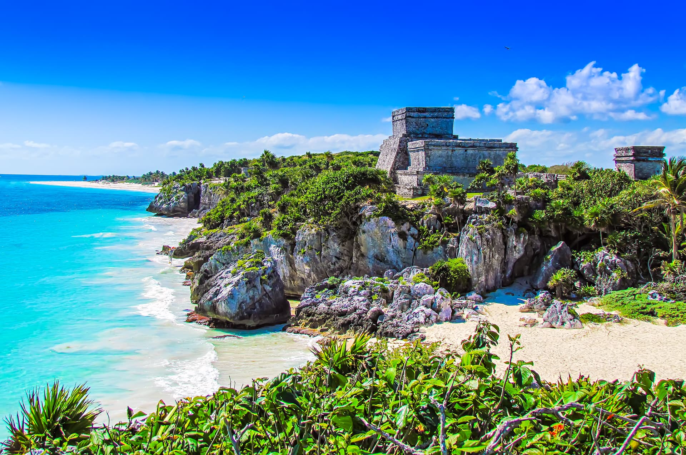
La cultura de Tulum proviene de la civilización maya, una de las más importantes de América.
Hoy en día se pueden apreciar tradiciones, arquitectura y costumbres que siguen vivas.
En la gastronomía destacan los mariscos frescos, tacos, ceviches y platillos típicos mexicanos.
También hay restaurantes internacionales y opciones gourmet.
Las artesanías locales, como textiles y joyería, reflejan la identidad cultural de la región.
Festivales y celebraciones tradicionales se realizan durante todo el año, mostrando música, danza y rituales mayas.
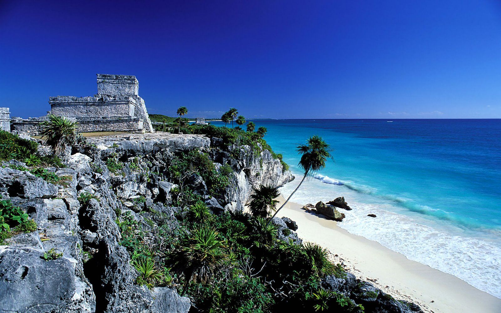
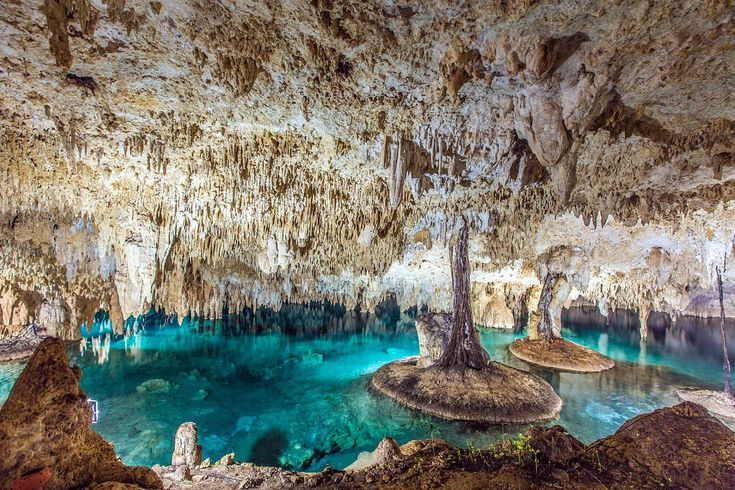
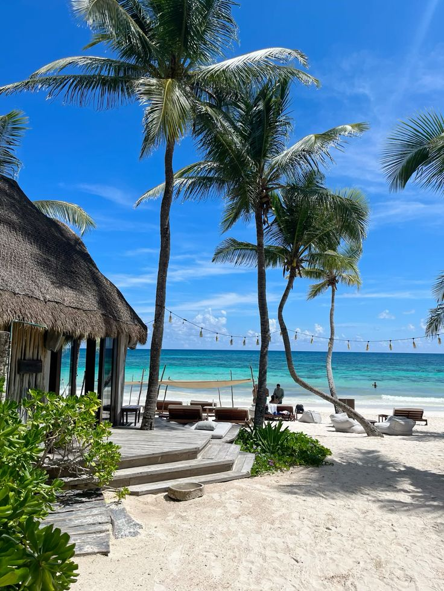
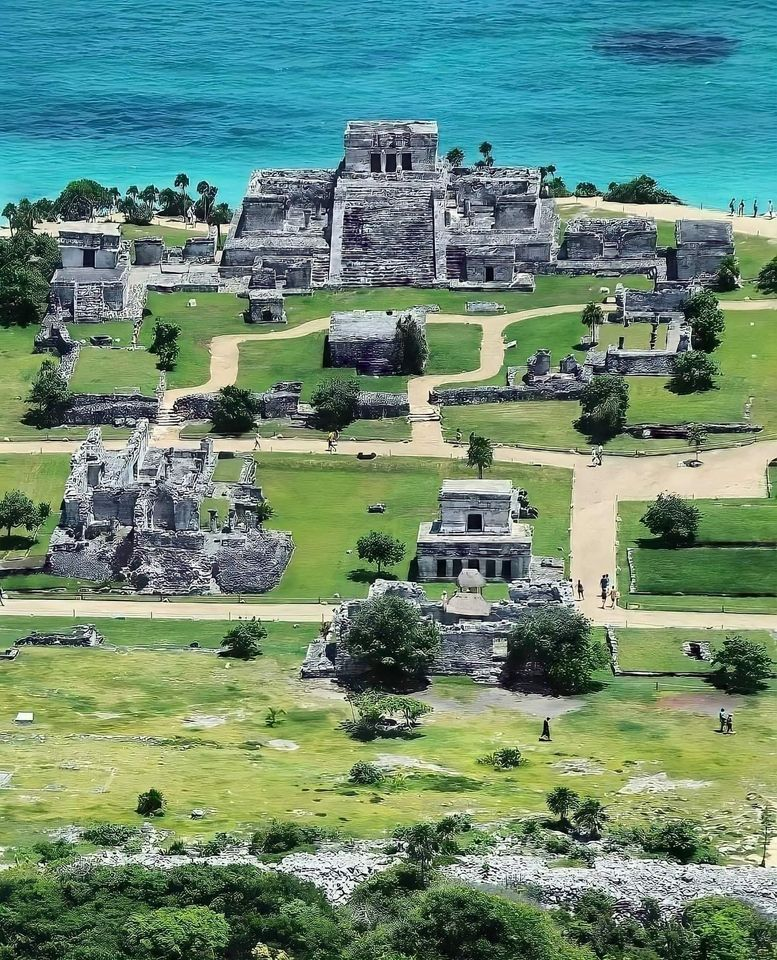
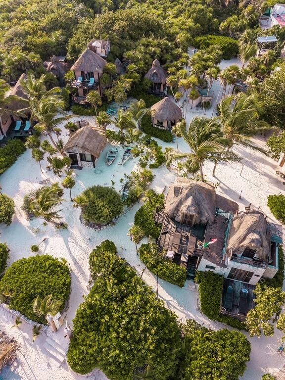
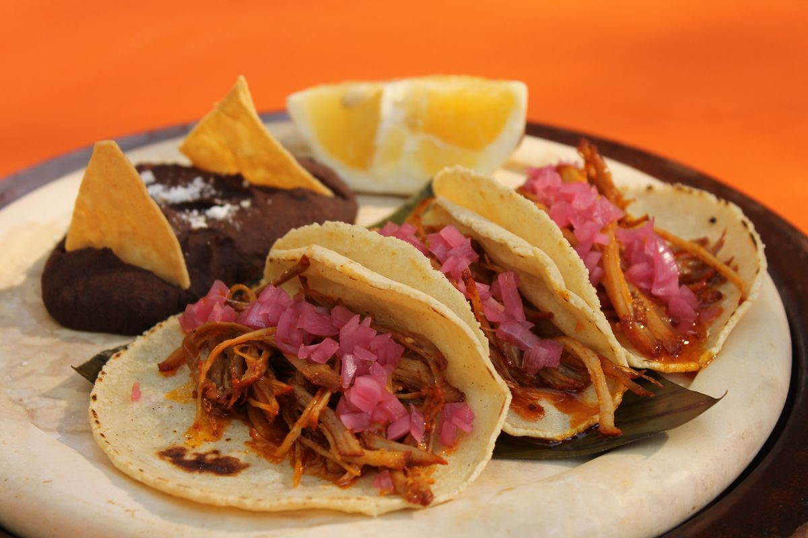
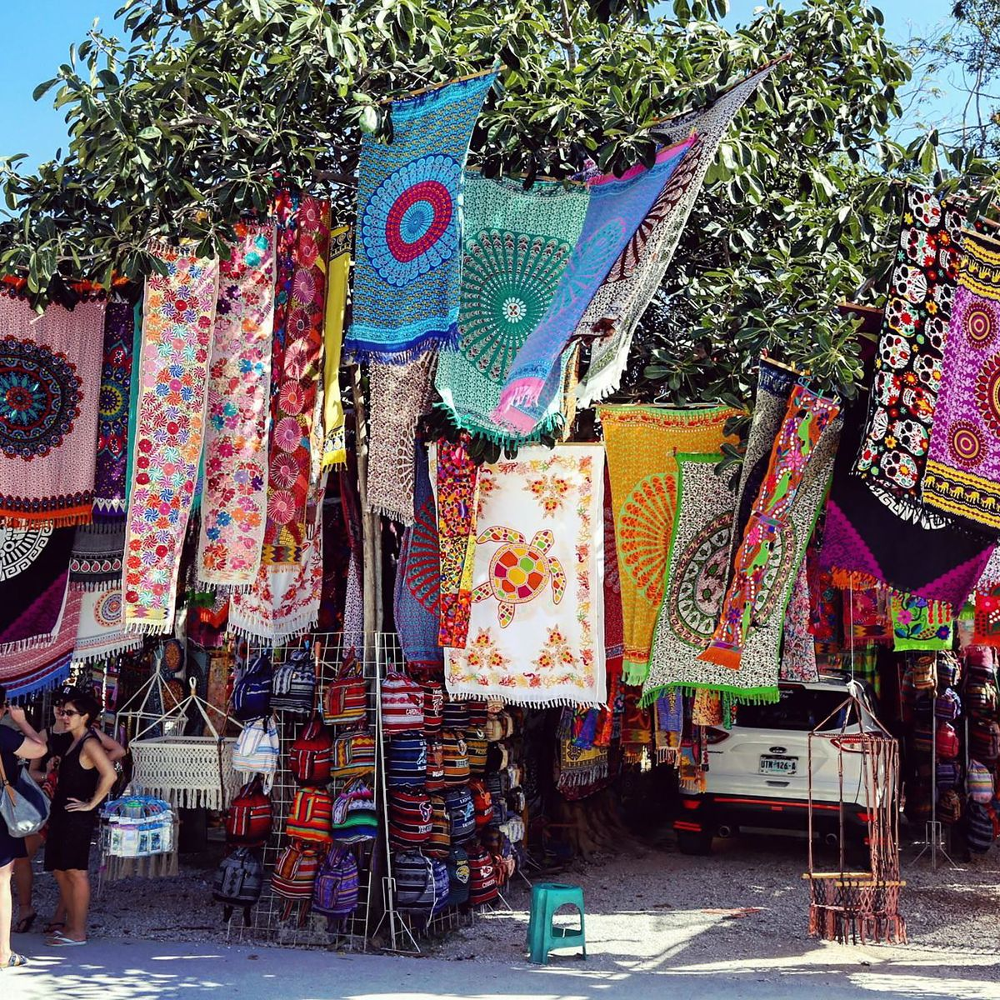
Noviembre a abril por clima agradable.
Puede ser accesible o de lujo dependiendo del hospedaje.
Ropa ligera, protector solar y traje de baño. También repelente de insectos y calzado cómodo para caminar.
Se puede llegar desde Cancún en autobús, coche o transporte privado. El trayecto dura aproximadamente 2 horas.
Sí, Tulum es un destino turístico seguro. Se recomienda tomar precauciones básicas como en cualquier viaje.
Tulum es un destino que combina naturaleza, historia y modernidad. Es ideal para relajarse, explorar y vivir experiencias únicas en el Caribe mexicano. Con sus playas, cenotes, cultura maya y gastronomía, ofrece algo para todos los gustos. Ya sea que busques aventura, descanso o conexión espiritual, Tulum siempre sorprende.